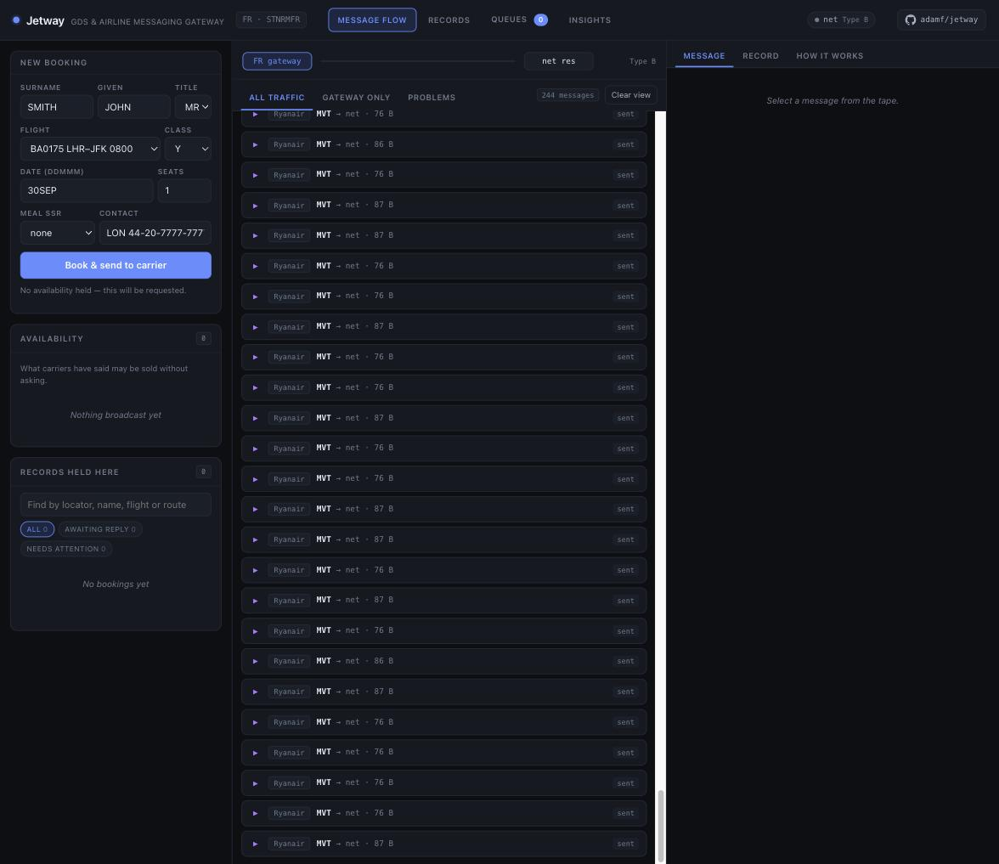
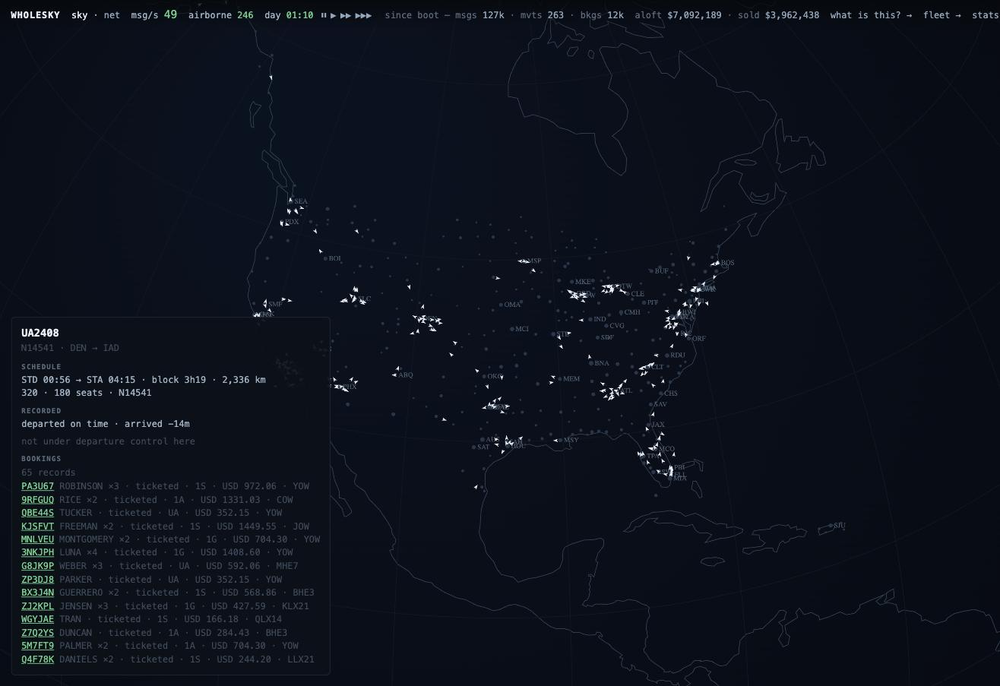
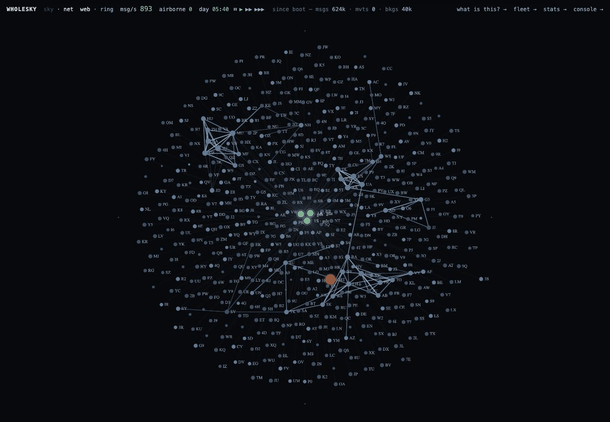
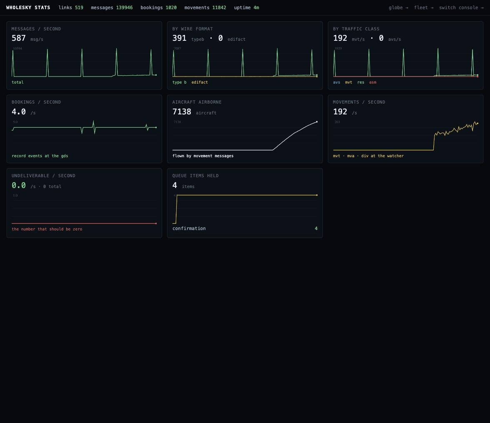
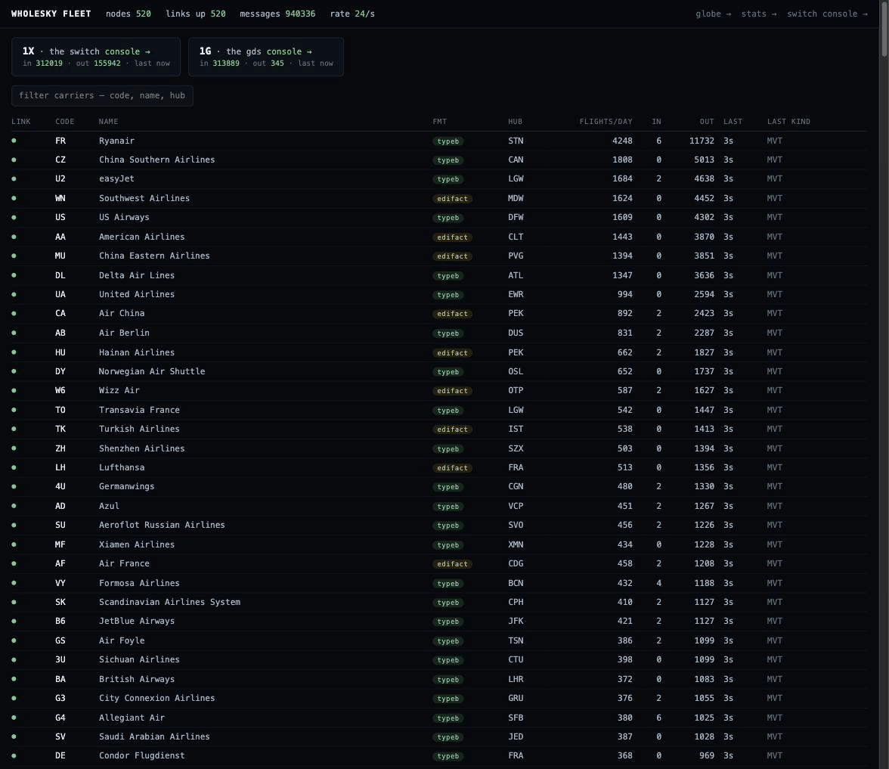
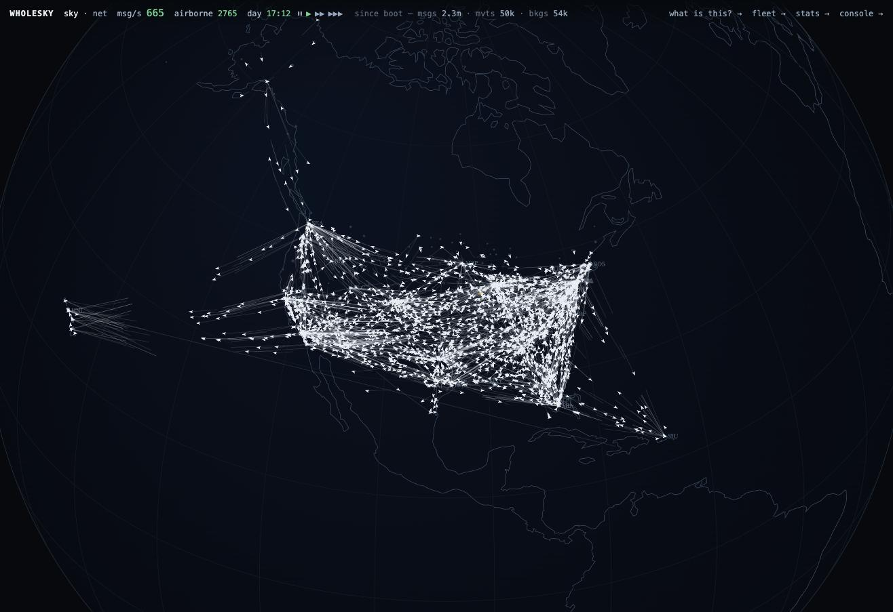

Every part is a system the industry actually runs
The state separation is real: nothing is shared between nodes except a message. Pick a component to see what it does, what it speaks, and how much of it is specified by a public document rather than inferred.
The eye
An orthographic globe drawn from the switch's own message bus. An aircraft appears because its carrier's MVT departure message crossed the switch; it lands because the arrival did. Sparks are messages in flight to and from a carrier's home; a red halo is a closed airport, sized by the real queue items an agent now has to rework.
Click any aircraft and you get what its carrier holds: the schedule and, on a recorded day, what really happened to it; departure control's clock, the name list's parts and amendments, seat map by cabin, connections, the load and loadsheet; the operations desk's callsign and flight plan and what the towers said back; the manifest name by name; and the bookings behind the names under the locators the selling channels issued, each with its fare.

One departure as its carrier holds it, from the schedule down to the loadsheet.
Carriers: a reservations system and a departure-control system each
Each carrier is a jetway gateway with its own book of record, its own seat inventory, its own locator space and its own console. It answers sells from its cabins, files its schedule changes, and runs its airports: reservations sends the airport the name list at T−180, the counter fills in waves with seat assignments and bag tags to sortation, the ADL goes at T−60, the counter closes, the gate boards, the sortation system reports the hold, the door closes at T−10 -- not over a loaded bag whose passenger is not on board; those are named and pulled first -- and the final sales, transfer, service and load messages and an AHM 560-method loadsheet go out.
The reservations and departure-control halves talk over the network like the separate systems they usually are. A carrier hosted on another machine is asked through federation; the switch cannot tell the difference.

Ryanair's own console, one of 522. Every node has one.
Distribution: three global distribution systems
1G, 1S and 1A each run a jetway gateway with queues, an availability cache and its share of demand. A booking is made at the GDS; the sell goes to the carrier as AIRIMP over Type B or PADIS over EDIFACT, the carrier answers KK, US or UC from its inventory, and the record carries every carrier's locator for the same booking. Interline itineraries settle across carriers; tickets are issued and advised; a slice of demand arrives as NDC orders on the GDS's HTTP endpoint.
What the carriers said is what the record shows. A carrier that cannot be reached lands the booking on the divergence queue, each item naming the gap that caused it.
- queues
- confirmation · waitlist · unable · divergence · schedule change · ticketing
- books
- bounded memory, or Postgres with one node view per system
- IROPS
- a cancelled flight queues every booking on it; reaccommodation protects on own metal, then on the codeshares the carrier markets under its own number, then interlines, and waits for each carrier's answer

United 2408 Denver to Washington: 65 records under the selling channels' locators, each priced.
The switch
A full jetwayd in relay mode: 500-odd TCP listeners, real framing, relay by Type B address line and EDIFACT UNB recipient, a write-ahead spool, an outbox per link that refuses rather than stalls when a peer stops reading, per-peer rate limits with a shared cap, and a lease so a standby takes over. It is the only piece every message crosses, which is why the globe can be drawn from its bus alone.
The sky is loud but not big. Real global reservations traffic is a few thousand messages a second; the switch peaks above 16,000 a second on one 4-vCPU machine during the departure banks. Topology is the interesting part, not throughput.
- invariants
- capture precedes interpretation · raw bytes are never regenerated from a parse · nothing undecodable is discarded
- metrics
jetway_outbox_depth·jetway_outbox_congested_total·jetway_ingress_links·jetway_spool_depth

Net mode: who converses with whom, laid out by its own springs.
Fares and inventory
jetway's pkg/fare is the structure of a filing: fare basis codes, rules for advance purchase, stay, season, change and refund, taxes by kind, passenger types at their discounts, and a pricing step every booking passes through. It carries no fare of its own, because ATPCO's are licensed. wholesky files a synthetic tariff from the schedule's distances, fourteen booking classes to a market, US-shaped taxes, and prices every booking as of its purchase date.
pkg/inventory is leg-based seat control: cabins per leg, serial nested class authorisations, waitlists a tenth of the cabin deep. A full cabin waitlists, a closed class with seats still in the cabin refuses, and the last seats go at the higher fares. The inventory is rebuilt from the book of record at every boot, because anything that remembers sold seats in memory oversells after a restart.
| the recorded day | value |
|---|---|
| whole day, 29,967 legs | $719M |
| average per passenger-leg | $255 |
| median per passenger | $204 |
| full-fare Y · business · deep discount | $341 · $750–785 · $93–160 |
| taxes | 15% |
Synthetic and labelled as such. The shape of a real Thanksgiving Wednesday, not anybody's filing.

The instrument panel. The number that should be zero is labelled as such.
Operations: datalink, the AFTN, and when the day goes wrong
Aircraft report OUT/OFF/ON/IN over a datalink provider (ARINC 620 shapes, from OAG's published tables); operations derives the MVT from the report instead of asserting it. Flight plans go to the towers over the AFTN (ICAO Annex 10) and the towers send DEP and ARR back. A diversion sends its DIV to the field it really landed at.
When a flight is cancelled, every booking on it is queued; the IROPS engine works the queue the way a desk does: the next flights over the same city pair, own metal first, free sale where the availability cache offers it and a request to the carrier where it does not, each request waited on until the carrier answers. A confirmed seat drops the dead leg with a real sell and a real cancel on the wire; a waitlist is kept and named; what nothing can carry stays on the queue for a person, while the airport offloads whoever had checked in and pulls their bags.

522 nodes across six machines, down to the raw telex, and a circuit cut and restored.
The filler and the demand
The weeks before the day. internal/fill reads the schedule and writes each carrier's book of record before the day runs: parties weighted the way holiday travel is, itineraries that connect on legs that actually connect, booking classes placed in cabins that have room for them on every leg, children and infants, special service requests at their real rates, a ticket per name, the carrier's locator and the selling channel's, purchase dates spread over the months before and priced as of that date. Deterministic from a seed, straight into Postgres with COPY. Southwest's day alone is 260,000 records, written in 24 seconds. One party in three thousand has a cello, and the cello has a seat.
The demand generator then rides on top as what it is on the day of travel: the late trickle, at hundreds of bookings a minute, with connections, interline, ticketing, cancellations, divides and a slice arriving as NDC orders.
- holiday load
- 0.85: 1,400,987 records, 3.1 million seats held before the first flight, 3.5 GB
- what it found
- a Type B line folded by the first family of four; the 60-line envelope overrun by a filled 737; a link deadlocked by both ends answering from inside their read loops. All fixed upstream, with tests watched to fail first.

The Wednesday before Thanksgiving 2025 at 17:00Z, every aircraft on its real tail.
The audit: the world answers for its laws while it flies
The invariant suite is the release gate. In process, internal/sim/invariants_test.go proves no oversell across selling channels, message conservation at the switch, interline convergence and that a cancelled flight queues everyone. Live, every shard reports its inventories, the core federates them, and skycheck exits non-zero on a cabin holding more than it has or a shard that did not answer, because a machine being down must not read as a pass.
$ go run ./cmd/skycheck https://wholesky-demo.fly.dev
6 shards, 8074 cabins, 126321 seats sold, 0 oversoldIts first run against the recorded day found 88 oversold cabins, 83 of them business cabins on Hawaii legs holding up to 54 passengers in 32 seats: the filler had drawn booking classes without looking at the aircraft. The gate paid for itself on its first run.
What is real, what is synthetic
Real: the wire formats and their published rules, the state separation, the failure modes, the schedule on the recorded day, its tails, delays by cause, cancellations and diversions.
Synthetic and labelled: the passengers, the aircraft types inferred from carrier and stage length, seat counts, and the fares. There is no real tariff in this, only the shape of one.